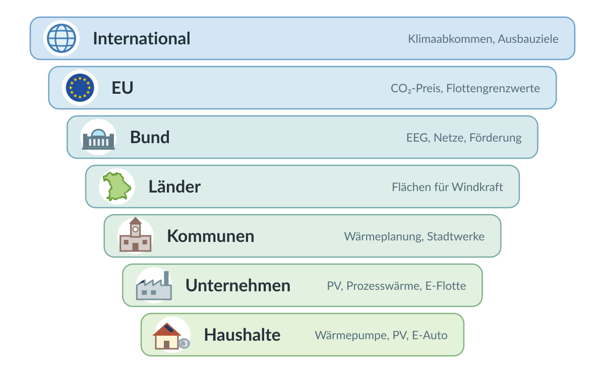
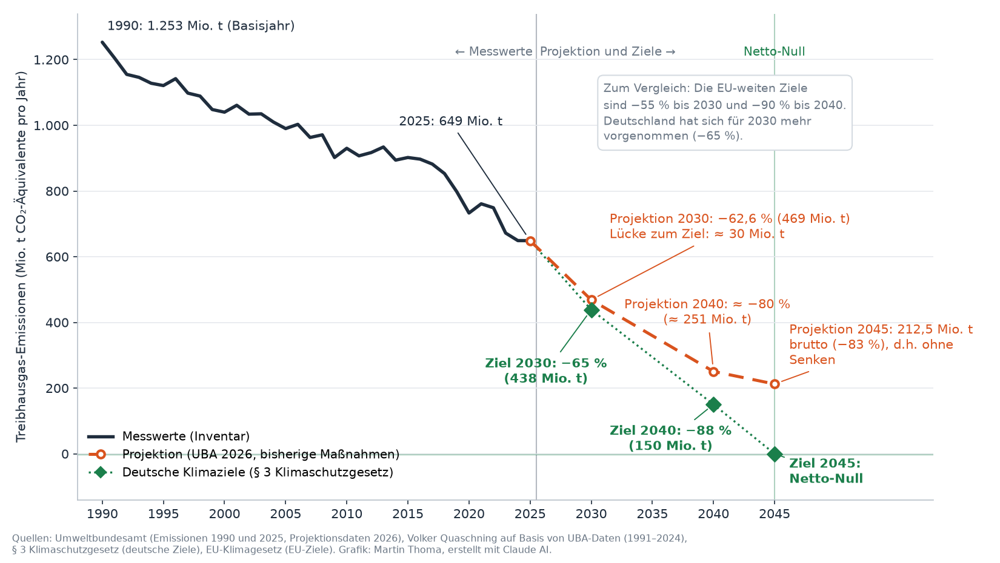
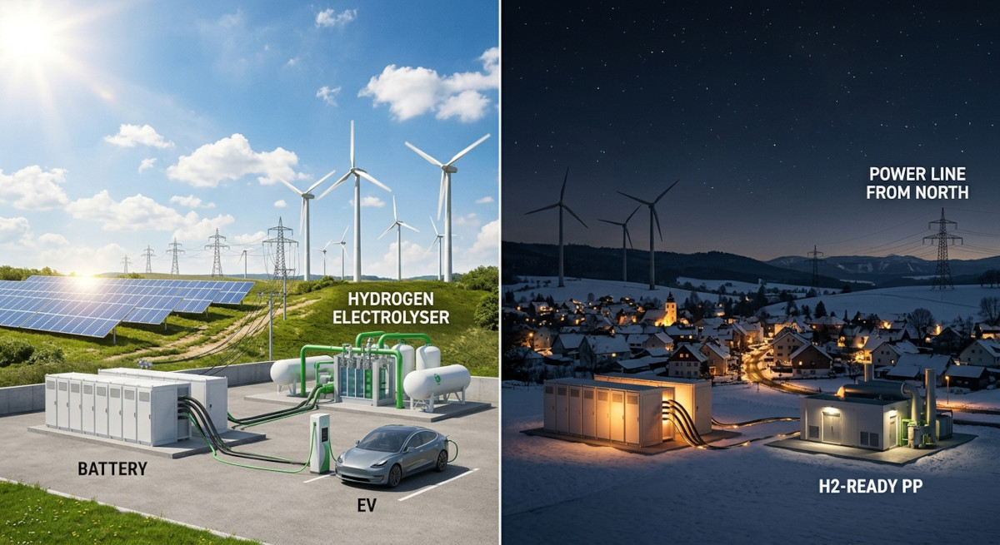
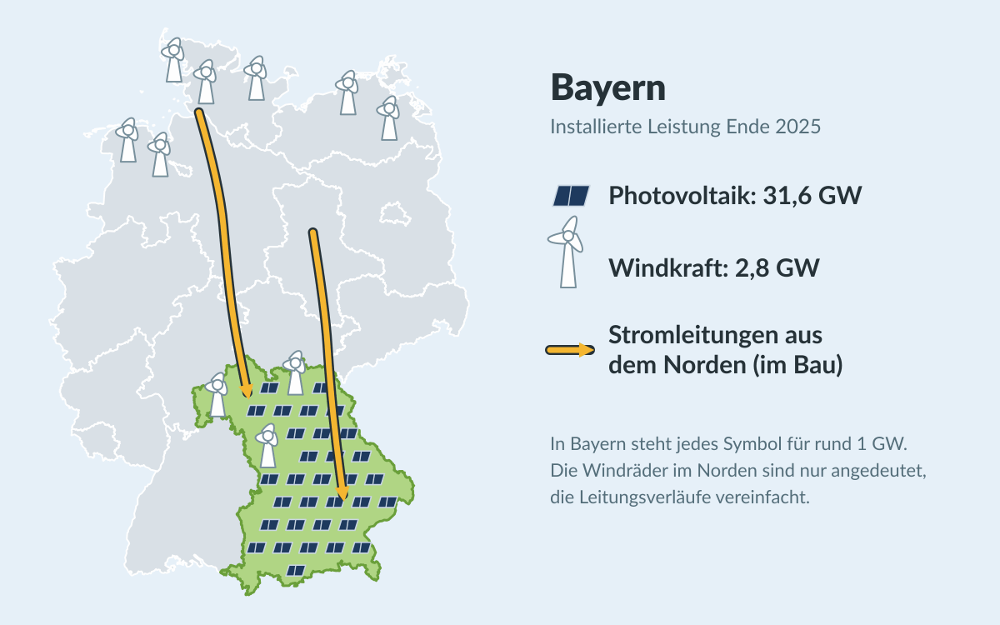
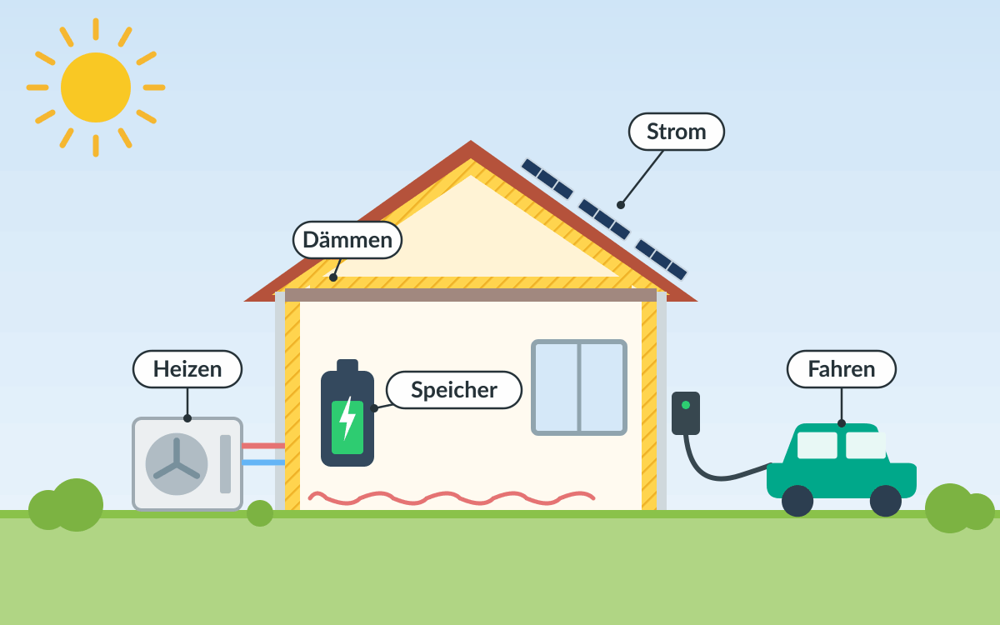

Die Energiewende ist das wohl wichtigste internationale Projekt. Es bezeichnet den strukturellen und nachhaltigen Wandel weg von fossilen Energieträgern hin zu erneuerbaren Energien.

Die Energiewende hat folgende essenziellen Bausteine:
- Elektrifizierung: Insbesondere Verkehr und das private Heizen müssen weg von Diesel, Benzin, Heizöl und Erdgas hin zu Strom aus erneuerbaren Quellen.
- Erneuerbare Energien: Die nahezu vollständige Umstellung der Energiegewinnung auf erneuerbare Quellen wie Wind, Solar, Wasserkraft und Umweltwärme.
- Flexibilisierung: Einerseits physische Energiespeicher wie Batterien, Pumpspeicherkraftwerke und Power-to-X (z.B. Wasserstoff aus Überschussstrom), andererseits flexible Lasten, die den Verbrauch dynamisch an das Angebot anpassen. Hinzu kommt ein leistungsfähiges Stromnetz, um Energie über große Distanzen zu transportieren und regionale Unterschiede in Erzeugung und Verbrauch auszugleichen.
- Energieeffizienz: Die Reduzierung des Energieverbrauchs, z.B. durch effizientere Technologien (Glühbirne → LED; Heizöl → Wärmepumpe; Verbrennungsmotor → Elektroantrieb) und durch bessere Dämmung von Gebäuden.
Dieses Gesamtpaket umzusetzen ist eine enorme Herausforderung auf allen politischen Ebenen. Im Folgenden schaue ich mir an, was auf welcher Ebene bereits passiert ist und was noch fehlt. Stand: September 2026.
TODO (Fakten): Alle Angaben mit „Stand: September 2026" vor der Veröffentlichung prüfen: (1) Hat der Bundestag die EEG-Novelle beschlossen? (2) Wurden die Kraftwerks-Ausschreibungen (September/Dezember 2026) gestartet? (3) Ist der „Smart Meter light" konkretisiert worden? (4) Hat das EU-Parlament das Verbrenner-Aus-Update entschieden? (5) Hat der Bundestag die EnEfG-Novelle (Energiemanagement erst ab 23,6 GWh) beschlossen? (6) PtL-Förderung prüfen: Laut airliners.de fördern Deutschland, Österreich und Luxemburg eSAF gemeinsam, Deutschland mit bis zu 2 Mrd. €. Das passt nicht zu „auf rund 100 Mio. € gekürzt" in der Tabelle. (7) Alle Links testen, viele Quellen sind Nachrichtenartikel.
Legende:
- ✅ Umgesetzt bzw. in Kraft
- ⏳ Beschlossen oder in Arbeit, aber das Ziel ist noch nicht erreicht
- ❌ Fehlt
- ↩️ Rückschritt: Etwas Beschlossenes wurde abgeschwächt oder zurückgenommen
Überblick: Wer ist wofür zuständig?
{kind=link}

| Ebene | Elektrifizierung (Verkehr, Wärme) |
Erneuerbare Energien (Wind, Solar, Wasserkraft, Umweltwärme) |
Flexibilisierung (Speicher, Lastmanagement, Netze) |
Energieeffizienz (Technologien, Gebäude) |
|---|---|---|---|---|
| International | - | Ausbauziele | - | Effizienzziele |
| EU | CO₂-Flottengrenzwerte, CO₂-Preis | Ausbauziele, Strommarktdesign | Strommarkt, grenzüberschreitende Netze | Effizienz- und Gebäuderichtlinie |
| Bund | Förderung, Steuern, Heizungsregeln | EEG, Flächenziele, Genehmigungsrecht | Netzausbau, Kraftwerke, Speicher, Wasserstoff, Smart Meter | Gebäuderecht, Förderung |
| Länder | - | Flächen für Windkraft, Solarpflicht | - | Landesbauordnung |
| Kommunen | Ladesäulen, ÖPNV | Bebauungspläne, eigene Dächer | Stadtwerke, Wärmenetze | Wärmeplanung, eigene Gebäude |
| Unternehmen | Prozesswärme, Fuhrpark | Eigene PV, Stromabnahmeverträge | Lastmanagement | Effizientere Prozesse |
| Haushalte | Wärmepumpe, E-Auto | PV-Anlage, Balkonkraftwerk | Dynamischer Tarif, Heimspeicher | Dämmung, sparsame Geräte |
International
| Maßnahme | Stand | Anmerkung |
|---|---|---|
| Pariser Klimaabkommen (2015): Erwärmung deutlich unter 2 °C, möglichst 1,5 °C | ⏳ | In Kraft seit 2016. Die 1,5-°C-Grenze wird voraussichtlich überschritten. |
| Austritt der USA aus dem Pariser Klimaabkommen | ↩️ | Wirksam seit dem 27. Januar 2026[1] |
| COP28 (Dubai, 2023): Abkehr von fossilen Energieträgern, Verdreifachung der erneuerbaren Kapazität und Verdopplung der Effizienzsteigerung bis 2030 | ⏳ | Beschlossen, aber nicht verbindlich |
Europäische Union
| Maßnahme | Baustein | Stand | Anmerkung |
|---|---|---|---|
| Europäisches Klimagesetz: −55 % Treibhausgase bis 2030, klimaneutral bis 2050[2] | Alle | ✅ | Seit 2021 in Kraft |
| Klimaziel 2040: −90 % gegenüber 1990 | Alle | ✅ | Bis zu 5 Prozentpunkte dürfen über internationale Zertifikate erreicht werden[3] |
| Emissionshandel ETS 1 für Strom und Industrie | Erneuerbare | ✅ | Seit 2005 |
| ETS 2: CO₂-Preis für Gebäude und Verkehr | Elektrifizierung | ⏳ | Von 2027 auf 2028 verschoben |
| CO₂-Grenzausgleich (CBAM) | Alle | ✅ | Seit 2026 müssen Importeure für die CO₂-Emissionen z.B. von Stahl und Zement bezahlen |
| Erneuerbare-Energien-Richtlinie (RED III): 42,5 % Erneuerbare am Endenergieverbrauch bis 2030 | Erneuerbare | ⏳ | Beschlossen 2023 |
| Energieeffizienz-Richtlinie: −11,7 % Endenergieverbrauch bis 2030 | Effizienz | ⏳ | Beschlossen 2023 |
| Gebäuderichtlinie (EPBD): Neubauten ab 2030 emissionsfrei | Effizienz | ⏳ | Beschlossen 2024, muss national umgesetzt werden |
| CO₂-Flottengrenzwerte: ab 2035 nur noch emissionsfreie Neuwagen | Elektrifizierung | ↩️ | Die EU-Kommission hat im Dezember 2025 vorgeschlagen, das Ziel für 2035 auf −90 % abzuschwächen[4]. Damit dürften z.B. Plug-in-Hybride weiter verkauft werden. |
| Reform des Strommarktdesigns (Differenzverträge) | Erneuerbare, Flexibilisierung | ✅ | Beschlossen 2024 |
| ReFuelEU Aviation: Mindestanteil synthetischer Kraftstoffe (E-Kerosin) im Flugverkehr | Power-to-X | ⏳ | In Kraft seit 2024: 1,2 % ab 2030, 5 % ab 2035. Bisher gibt es in Europa nur Pilotanlagen. |
Bund
Ziele
| Maßnahme | Stand | Anmerkung |
|---|---|---|
| Klimaschutzgesetz: klimaneutral bis 2045 | ⏳ | Seit 2021. Die Novelle 2024 hat die verbindlichen Jahresziele für einzelne Sektoren abgeschafft. |
| Atomausstieg | ✅ | Die letzten drei Kernkraftwerke gingen im April 2023 vom Netz. |
| Kohleausstieg spätestens 2038 | ⏳ | Gesetzlich festgelegt |
| 80 % erneuerbarer Strom bis 2030 | ⏳ | 2025 waren es knapp 56 %[5] des Bruttostromverbrauchs. |
Wie weit der Weg noch ist, zeigt der Verlauf der Emissionen: Seit 1990 sind sie um knapp die Hälfte gesunken[6]. Bis 2045 müssen sie auf netto null fallen. Das sind noch rund 20 Jahre, in denen die Emissionen um etwas mehr sinken müssen (649 Mio. t) als in den 35 Jahren davor (604 Mio. t)[6].
{kind=link}

Wichtig beim Lesen der Grafik:
- Die Ziele (grün) sind die deutschen Ziele aus dem Bundes-Klimaschutzgesetz: −65 % bis 2030, −88 % bis 2040 und Netto-Treibhausgasneutralität bis 2045[9].
- Nicht verwechseln mit den EU-Zielen: Für die EU insgesamt gelten −55 % bis 2030[2] und −90 % bis 2040[3]. Deutschland hat sich für 2030 also mehr vorgenommen als die EU. Das deutsche Ziel für 2040 (−88 %) liegt dagegen knapp unter dem EU-weiten. Werden für die EU-Ziele höhere nationale Ziele nötig, muss die Bundesregierung sie anheben; senken darf sie sie nicht[9].
- Die Projektion (orange) ist keine Vorhersage, sondern zeigt, was mit den bis November 2025 beschlossenen Maßnahmen passiert[8]. Später abgeschwächte Regeln wie das Heizungsgesetz sind darin noch nicht berücksichtigt.
- Das Ziel für 2030 verfehlt die Projektion laut UBA um rund 30 Mio. t[8]. Für 2040 sind es rund 100 Mio. t, weil die Projektion dort nur etwa −80 % statt −88 % erreicht[8].
- „Netto-Null" heißt nicht, dass gar nichts mehr ausgestoßen wird: Restemissionen (z.B. aus der Landwirtschaft) müssen durch natürliche und technische Senken ausgeglichen werden. Die Projektion für 2045 (212,5 Mio. t) ist der Bruttowert ohne diese Senken[8].
TODO: Die Messwerte 1991-2024 stammen aus einer Zusammenstellung von Volker Quaschning auf Basis älterer UBA-Daten und weichen um wenige Mio. t von der aktuellen UBA-Trendtabelle ab (z.B. 2024: 649 statt 649,8). Vor der Veröffentlichung mit der Excel-Datei „Nationale Trendtabellen Treibhausgase" des UBA vergleichen (Link auf der UBA-Seite oben) und die Grafik ggf. neu erzeugen. Die Werte für 2040 (−80 %) und 2045 in der Projektion sind gerundet bzw. aus dem UBA-Hintergrundpapier abgelesen.
Erneuerbare Energien
| Maßnahme | Stand | Anmerkung |
|---|---|---|
| Wind-an-Land-Gesetz: 2 % der Bundesfläche für Windkraft bis 2032 | ⏳ | Zwischenziel 1,4 % bis 2027 |
| Solarpaket I: einfachere Balkonkraftwerke (bis 800 W), Mieterstrom | ✅ | Seit 2024 |
| EEG-Novelle: Ende der festen Einspeisevergütung für neue PV-Anlagen unter 25 kW ab 2027 | ⏳ | Vom Kabinett am 29. Juli 2026 beschlossen[10], noch nicht vom Bundestag. Die Solarbranche warnt vor einem Einbruch beim Zubau. |
Flexibilisierung
{kind=link}

Sonne und Wind liefern nicht immer dann Strom, wenn er gebraucht wird. Eine Dunkelflaute ist eine Phase mit wenig Wind und wenig Sonne, im Winter oft über mehrere Tage. Dann braucht es Speicher, steuerbare Kraftwerke, Stromimporte und Verbraucher, die ihren Verbrauch verschieben können. Außerdem muss der Strom vom Erzeugungsort zum Verbrauchsort kommen.
| Maßnahme | Stand | Anmerkung |
|---|---|---|
| Stromnetzausbau, z.B. SuedLink | ⏳ | Der Strom aus dem windreichen Norden muss in den Süden. |
| Kraftwerksstrategie: wasserstofffähige Gaskraftwerke für Dunkelflauten | ⏳ | Vom Kabinett im Mai 2026 beschlossen[11]; erste Ausschreibungen für September und Dezember 2026 geplant |
| Steuerbare Verbrauchseinrichtungen (§ 14a EnWG[12]) und dynamische Stromtarife | ✅ | Seit 2024 bzw. 2025 |
| Smart-Meter-Rollout | ⏳ | Pflicht-Einbau für Haushalte mit mehr als 6.000 kWh/Jahr, PV-Anlagen ab 7 kW oder steuerbaren Verbrauchern wie Wärmepumpen und Wallboxen. Er läuft, aber langsam. |
| „Smart Meter light“: günstiger Zähler für alle anderen Haushalte, damit auch sie dynamische Stromtarife nutzen können | ⏳ | Am 1. Juli 2026 vom Koalitionsausschuss beschlossen[13], bisher nur ein Konzept. Er soll Verbrauchsdaten übertragen, aber keine Geräte steuern können. VDE FNN und DKE lehnen das Konzept ab[14]. |
Power-to-X und Wasserstoff
Mit Power-to-X wird Strom in andere Energieträger umgewandelt, z.B. per Elektrolyse in Wasserstoff oder weiter in synthetische Kraftstoffe (E-Fuels). Das ist ineffizienter als die direkte Nutzung von Strom, aber wichtig für Bereiche, die sich schwer elektrifizieren lassen (Stahl, Chemie, Flug- und Schiffsverkehr), und als Langzeitspeicher für Dunkelflauten.
| Maßnahme | Stand | Anmerkung |
|---|---|---|
| Nationale Wasserstoffstrategie: 10 GW Elektrolyseleistung bis 2030 | ⏳ | Installiert sind erst rund 0,18 GW, weitere 1,3 GW sind beschlossen oder im Bau[15]. Das EWI erwartet, dass das Ziel verfehlt wird. |
| Wasserstoff-Kernnetz | ⏳ | 2024 genehmigt, im Bau |
| Nationale Quote für E-Kerosin (PtL) im Flugverkehr ab 2026 | ↩️ | Abgeschafft[16], stattdessen gilt nur die EU-Quote ab 2030. Die Förderung für erste industrielle PtL-Anlagen wurde von über 2 Mrd. € auf rund 100 Mio. € gekürzt. |
Elektrifizierung und Energieeffizienz
| Maßnahme | Stand | Anmerkung |
|---|---|---|
| Heizungsgesetz: neue Heizungen müssen zu 65 % mit erneuerbaren Energien betrieben werden | ↩️ | Mit dem Gebäudemodernisierungsgesetz am 10. Juli 2026 abgeschafft[17]. Neue Öl- und Gasheizungen bleiben erlaubt; ab 2029 soll ein steigender Bioanteil beigemischt werden. |
| Kommunale Wärmeplanung (Wärmeplanungsgesetz) | ⏳ | Siehe Kommunen |
| Förderprogramm für E-Autos (bis zu 6.000 €, einkommensabhängig) | ✅ | Seit Mai 2026[18] |
| Kfz-Steuerbefreiung für E-Autos | ✅ | Für Neuzulassungen bis Ende 2030 verlängert[19], längstens bis 2035 |
| Strompreise senken: Bundeszuschuss zu den Netzentgelten, Gasspeicherumlage abgeschafft | ✅ | Seit 2026 |
| Stromsteuer für private Haushalte senken | ❌ | Nur für produzierende Unternehmen und Landwirte gesenkt. Solange Strom teuer ist, lohnen sich Wärmepumpe und E-Auto weniger. |
| Deutschlandticket | ✅ | Seit 2023; 2026 auf 63 € pro Monat verteuert |
| Tempolimit auf Autobahnen | ❌ | |
| Sondervermögen Infrastruktur und Klimaneutralität (davon 100 Mrd. € für den Klima- und Transformationsfonds) | ⏳ | 2025 beschlossen. Es gibt Kritik, dass das Geld zweckentfremdet wird. |
Länder am Beispiel Bayern
| Maßnahme | Baustein | Stand | Anmerkung |
|---|---|---|---|
| Bayerisches Klimaschutzgesetz: klimaneutral bis 2040 | Alle | ⏳ | Fünf Jahre früher als der Bund (2045). Das Ziel ist gesetzlich festgeschrieben, die Umsetzung hängt an den Einzelmaßnahmen unten. |
| Lockerung der 10H-Regel für Windräder | Erneuerbare | ✅ | Seit 2022 gilt in Wäldern, an Autobahnen und Bahnlinien, in Gewerbegebieten und in Vorranggebieten nur noch ein Abstand von 1.000 m. Sonst gilt 10H weiterhin. |
| Flächen für Windkraft: 1,1 % bis 2027, 1,8 % bis 2032 | Erneuerbare | ⏳ | Aktuell sind rund 1 % der Landesfläche[20] ausgewiesen. |
| Windkraft ausbauen: 1.000 neue Windräder bis 2030 auf den Weg bringen | Erneuerbare | ⏳ | 2025 gab es rund 770 Genehmigungsanträge[21], aber nur 29 neue Windräder mit 82 MW[20] gingen in Betrieb. Insgesamt sind es 2,8 GW. |
| Photovoltaik: 40 GW bis 2030 | Erneuerbare | ⏳ | 2025 Rekordzubau von 4,7 GW auf insgesamt 31,6 GW[20]. Bayern ist beim Solarausbau Spitzenreiter. |
| Solarpflicht | Erneuerbare | ⏳ | Für neue Gewerbe- und Industriegebäude seit 2023; für neue Wohngebäude nur eine Soll-Vorschrift |
TODO: Wenn Zeit ist: zwei weitere Bundesländer zum Vergleich ergänzen (z.B. ein windstarkes Land wie Schleswig-Holstein und einen Stadtstaat wie Hamburg), damit „Länder" mehr ist als ein Beispiel. Quellen: Länderberichte der Wirtschaftsministerien.
{kind=link}

Was könnte Bayern besser machen?
Bayern ist bei der Photovoltaik stark, bei der Windkraft und beim Netzausbau aber seit Jahren hinten dran. Meine Vorschläge:
| Vorschlag | Baustein | Begründung |
|---|---|---|
| 10H-Regel komplett abschaffen | Erneuerbare | Die Lockerung von 2022 hat geholfen, aber außerhalb der Ausnahmegebiete gilt 10H weiterhin. Die Flächenziele des Bundes sind ohnehin verbindlich. |
| Genehmigte Windräder schneller bauen | Erneuerbare | Anträge und Genehmigungen sind auf Rekordniveau, gebaut wurde 2025 aber nur ein Bruchteil. Die Bayerischen Staatsforsten wollen bis 2030 rund 500 Windräder[20] im Staatswald ermöglichen – das ist ein guter Hebel, den man beschleunigen sollte. |
| Solarpflicht für alle Neubauten und Dachsanierungen | Erneuerbare | Für neue Wohngebäude gibt es bisher nur eine Soll-Vorschrift. Wer ohnehin ein Dach neu deckt, sollte PV direkt mitdenken müssen. |
| Netzausbau nicht mehr bremsen | Flexibilisierung | Bayern hat 2015 durchgesetzt, dass SuedLink als Erdkabel gebaut wird. Das hat die Leitung teurer und später gemacht. Gerade Bayern braucht den Windstrom aus dem Norden, weil die Kernkraftwerke abgeschaltet sind. |
| Netzanschlüsse beschleunigen | Flexibilisierung | Laut dem bayerischen Länderbericht[20] werden Netzanschlüsse zunehmend zum knappen Gut. Batteriespeicher direkt an PV-Parks können die Netze entlasten. |
| Industrie ans Wasserstoffnetz anbinden | Power-to-X | Das Chemiedreieck um Burghausen braucht große Mengen Wasserstoff. Ohne rechtzeitige Anbindung an das Kernnetz droht Abwanderung. |
| Kleine Gemeinden bei der Wärmeplanung unterstützen | Elektrifizierung, Effizienz | Die meisten bayerischen Gemeinden müssen bis 2028 einen Wärmeplan haben. Viele haben dafür kein Personal. Landesweite Musterpläne, Beratung und Förderung für Wärmenetze würden helfen. |
| ÖPNV im ländlichen Raum stärken | Elektrifizierung, Effizienz | Auf dem Land ist man ohne Auto aufgeschmissen. Ein dichterer Takt bei Bus und Bahn sowie Rufbusse würden viele Autofahrten ersetzen. |
Kommunen
| Maßnahme | Baustein | Stand | Anmerkung |
|---|---|---|---|
| Kommunale Wärmeplanung: Großstädte bis 30.06.2026, alle anderen bis 30.06.2028 | Elektrifizierung, Effizienz | ⏳ | 72 von 83 Großstädten[22] sind fristgerecht fertig geworden. |
| Flächen für Wind- und Solarparks ausweisen | Erneuerbare | ⏳ | Über Flächennutzungs- und Bebauungspläne entscheidet die Kommune, ob Projekte überhaupt möglich sind. |
| PV auf kommunalen Dächern (Schulen, Rathäuser, Bauhöfe) | Erneuerbare | ⏳ | Eigenverbrauch senkt die Stromkosten der Kommune. Der Ausbau ist Entscheidung des Stadt- bzw. Gemeinderats. |
| Fernwärme ausbauen (Stadtwerke) | Elektrifizierung, Flexibilisierung | ⏳ | Wo Wärmenetze wirtschaftlich sind, zeigt die kommunale Wärmeplanung. |
| Ladesäulen, ÖPNV, Radwege, Carsharing | Elektrifizierung | ⏳ | Beispiel: Carsharing-Diskussion im Verkehrsausschuss Plattling |
Beispiel Plattling
TODO (Foto): Eigenes Foto vom Solarpark Pielweichs II (oder Luftbild, falls die ESB eines freigibt) unter
images/2026/09/plattling-solarpark.jpgeinbinden, höchstens 1600 px breit und unter 500 KB. Alt-Text: „Solarpark Pielweichs II bei Plattling". Kein KI-Bild, weil es ein realer Ort ist.
Plattling ist eine Stadt mit rund 13.000 Einwohnern im Landkreis Deggendorf. Hier ist bereits einiges passiert:
| Maßnahme | Baustein | Stand | Anmerkung |
|---|---|---|---|
| Kommunale Wärmeplanung[23] | Elektrifizierung, Effizienz | ⏳ | Im November 2024 an die Energie Südbayern (ESB) vergeben, zu 90 % vom Bund gefördert. Die Ergebnisse wurden am 18.03.2026 öffentlich vorgestellt. Gesetzliche Frist: 30.06.2028. |
| Solarpark Pielweichs II[24] | Erneuerbare | ✅ | 5 MWp auf 4,4 ha, rund 5,7 Mio. kWh pro Jahr. Das entspricht rechnerisch dem Verbrauch von etwa 1.600 Haushalten. |
| PV-Anlagen auf Gebäuden der Stadtwerke Plattling[25] | Erneuerbare | ✅ | |
| Windkraft | Erneuerbare | ❌ | Im Regionalplan-Entwurf Donau-Wald[26] liegen die Vorranggebiete im Landkreis Deggendorf u.a. in Grafling, Deggendorf, Schaufling und Lalling – nicht in Plattling. |
| Carsharing | Elektrifizierung | ⏳ | Im November 2025 im Verkehrsausschuss vorgestellt |
Was könnte Plattling besser machen?
| Vorschlag | Baustein | Begründung |
|---|---|---|
| Wärmeplan in konkrete Projekte umsetzen | Elektrifizierung, Effizienz | Ein Wärmeplan allein spart keine Tonne CO₂. Der Stadtrat sollte für die Eignungsgebiete einen Zeitplan beschließen, und die Stadtwerke könnten Wärmenetze betreiben. Die Ergebnisse sollten außerdem auf der Website der Stadt stehen, damit Hausbesitzer planen können. |
| PV auf alle städtischen Dächer und Parkplätze | Erneuerbare | Schulen, Bürgerspital, Bauhof, Kläranlage und große Parkplätze bieten viel Fläche. Mit Eigenverbrauch rechnet sich das meist schnell. |
| PV-Pflicht in neuen Bebauungsplänen | Erneuerbare | Kommunen können im Bebauungsplan festsetzen, dass neue Gebäude PV-Anlagen bekommen (§ 9 Abs. 1 Nr. 23b BauGB[27]). Das geht weiter als die bayerische Soll-Vorschrift. |
| Weitere Solarparks mit Bürgerbeteiligung | Erneuerbare | Pielweichs II ist ein guter Anfang. Agri-PV oder PV entlang von Bahnlinie und Autobahn könnten folgen – idealerweise mit einer Energiegenossenschaft, damit die Einnahmen in der Region bleiben. |
| Batteriespeicher an Solarparks | Flexibilisierung | Ein Speicher verschiebt den Mittagsstrom in den Abend und entlastet das Netz. |
| Bei Windparks im Landkreis mitmachen | Erneuerbare | Wenn es in Plattling selbst keine Windflächen gibt, könnten sich Stadt, Stadtwerke oder Bürger an Windparks in den Nachbargemeinden beteiligen. |
| Carsharing mit E-Autos und mehr Ladesäulen | Elektrifizierung | Im Verkehrsausschuss wurde für den 9-Sitzer ein Diesel empfohlen. Für die meist kurzen Strecken in und um Plattling reicht ein E-Auto. Dazu gehören Ladesäulen, z.B. am Bahnhof und am Rathaus. |
| Dynamische Stromtarife über die Stadtwerke | Flexibilisierung | Falls noch nicht vorhanden: Ein Tarif, der günstigen Strom bei viel Sonne und Wind weitergibt, macht Wärmepumpen und E-Autos für Bürger attraktiver. |
| Radwege mitplanen | Effizienz | Wenn z.B. die Dr.-Zacher-Straße verbreitert wird, sollte der Radweg von Anfang an Teil der Planung sein. |
Unternehmen
TODO (Inhalt): In der Tabelle unten noch ergänzen: Industriestrompreis, Stromabnahmeverträge (PPA), Wärmepumpen für Prozesswärme und Zahlen der zweiten Gebotsrunde der Klimaschutzverträge.
| Maßnahme | Baustein | Stand | Anmerkung |
|---|---|---|---|
| Klimaschutzverträge: Der Staat gleicht die Mehrkosten klimafreundlicher Produktion aus | Elektrifizierung | ✅ | Erste Gebotsrunde 2024 |
| Grüner Stahl | Elektrifizierung | ❌ | ArcelorMittal hat die Umstellung in Bremen und Eisenhüttenstadt 2025 gestoppt[28] - trotz zugesagter Förderung von 1,3 Mrd. €. |
| Großbatteriespeicher | Flexibilisierung | ⏳ | Es werden sehr viele Anschlussanfragen gestellt; siehe Strom in Deutschland |
| Energieeffizienzgesetz: Energie- oder Umweltmanagementsystem ab 7,5 GWh Jahresverbrauch (§ 8 EnEfG[29]), veröffentlichte Umsetzungspläne für wirtschaftliche Effizienzmaßnahmen ab 2,5 GWh (§ 9 EnEfG[30]) | Effizienz | ↩️ | Seit 2023 in Kraft. Das Kabinett hat im Juni 2026 eine Novelle beschlossen, nach der das Managementsystem erst ab 23,6 GWh[31] Pflicht sein soll. Bundestag und Bundesrat müssen noch zustimmen. |
Was können Unternehmen selbst tun?
Vieles davon muss nicht auf die Politik warten. Es spart oft sogar Geld, weil Strom vom eigenen Dach günstiger ist als Netzstrom.
| Vorschlag | Baustein | Begründung |
|---|---|---|
| PV auf Dächer, Fassaden und Parkplätze, dazu ein Batteriespeicher | Erneuerbare, Flexibilisierung | Der Verbrauch im Betrieb fällt meist tagsüber an, wenn die Sonne scheint. Ein Speicher verschiebt Überschüsse in den Abend, kappt Lastspitzen und macht unabhängiger vom Strompreis. Siehe Wirtschaftlichkeitsberechnung einer PV-Anlage und Batteriespeicher. |
| Wärmepumpe statt Gas- oder Ölheizung; Klimaanlagen, die auch heizen können | Elektrifizierung, Effizienz | Auch in Büros und Hallen sind Wärmepumpen möglich. Wer ohnehin kühlen muss, kann mit einer reversiblen Klimaanlage (Luft-Luft-Wärmepumpe) im Winter damit heizen. Siehe Wärmepumpen und Klimaanlagen-Modelle. |
| E-Autos statt Verbrenner als Dienstwagen (Car Policy mit CO₂-Grenzwert) | Elektrifizierung | Laut Agora Verkehrswende[32] ist rund jede fünfte Pkw-Neuzulassung ein Dienstwagen, und diese Autos landen nach wenigen Jahren auf dem Gebrauchtmarkt. Nur etwa 37 % der Unternehmen setzen in ihrer Fuhrparkrichtlinie klare Klimaziele. Ein CO₂-Grenzwert, der schrittweise sinkt, lenkt die Flotte auf Elektroautos. Siehe E-Autos. |
| Ladesäulen für Mitarbeiter und Besucher | Elektrifizierung, Flexibilisierung | Wer keinen Ladeplatz zu Hause hat, kann so trotzdem elektrisch fahren. Mit Lastmanagement lädt man vor allem dann, wenn die eigene PV-Anlage Überschuss liefert. Die Agora-Empfehlung[32] für Car Policies nennt Ladeinfrastruktur am Arbeitsplatz ausdrücklich. |
| Deutschlandticket als Mitarbeiter-Benefit | Elektrifizierung, Effizienz | Übernimmt der Arbeitgeber mindestens 25 % des Ticketpreises, gibt es von den Verkehrsverbünden zusätzlich 5 % Rabatt. Bei 63 € pro Monat zahlen Mitarbeiter dann rund 44 € statt 63 €. Der Zuschuss ist steuer- und sozialabgabenfrei, wenn er zusätzlich zum Gehalt gezahlt wird[33]. |
| Homeoffice ermöglichen | Effizienz | Der klimafreundlichste Arbeitsweg ist der, der gar nicht stattfindet. Rund ein Fünftel des Personenverkehrs und seiner Treibhausgase geht auf das Berufspendeln zurück, und 2020 nahmen 68 % der Pendler das Auto[34]. Laut einer Studie des Öko-Instituts[35] für das Bundesumweltministerium (2022) kann mehr Homeoffice bis zu 3,7 Mio. t Treibhausgase pro Jahr einsparen. Selbst im vorsichtigsten Szenario mit 20 % Homeoffice ist es rund 1 Mio. t, und schon ein Tag pro Woche verbessert die Bilanz. Die Studie weist aber auf einen Rebound hin: Wer wegen des Homeoffice aufs Land zieht, fährt privat unter Umständen mehr Auto. |
| Fahrrad-Leasing und gute Abstellanlagen | Effizienz | Ein Pkw verursacht im Schnitt 164 g Treibhausgase pro Personenkilometer, ein Pedelec 3 g, ein normales Fahrrad im Betrieb gar keine (Bezugsjahr 2024)[36]. Bei 10 km Arbeitsweg (einfach) und 220 Arbeitstagen sind das rund 720 kg pro Jahr mit dem Auto gegenüber etwa 13 kg mit dem Pedelec. Mit dem Pedelec werden auch längere Strecken machbar. Sichere, überdachte Stellplätze und Duschen senken die Hürde. |
| Videokonferenz oder Bahn statt Flug und Dienstwagen bei Dienstreisen | Effizienz | Auch das empfiehlt die Agora-Studie: Alternativen zum Auto wie Videokonferenzen und Bahnreisen fördern. |
| Mehr vegetarische Gerichte in der Kantine | Übergreifend | In drei Mensen der Universität Cambridge wurde der Anteil vegetarischer Gerichte von 25 auf 50 % verdoppelt. Dadurch stieg der Verkauf vegetarischer Gerichte je nach Mensa um 41 bis 79 %, ohne dass insgesamt weniger verkauft wurde[37]. Ausgewertet wurden knapp 95.000 Mahlzeiten. Den größten Effekt gab es bei Menschen, die vorher kaum vegetarisch gegessen hatten. Zur Wirkung auf das Klima siehe Ernährung unten. |
| Energieverbrauch messen und Effizienz steigern | Effizienz | LED-Beleuchtung, Abwärmenutzung, gedämmte Gebäudehüllen, Druckluft- und Kälteanlagen prüfen. Ein Energiemanagement zeigt, wo sich Investitionen am schnellsten lohnen. Große Verbraucher müssen das ohnehin: Ab 7,5 GWh pro Jahr schreibt das Energieeffizienzgesetz ein Energie- oder Umweltmanagementsystem vor, ab 2,5 GWh Umsetzungspläne für Maßnahmen, die sich wirtschaftlich lohnen (siehe Tabelle oben). Kleinere Unternehmen können freiwillig nach demselben Muster vorgehen. |
| Flexibel verbrauchen und Ökostrom einkaufen | Flexibilisierung, Erneuerbare | Lasten wie Kühlung, Ladeinfrastruktur oder Prozesse in Zeiten mit viel Wind und Sonne verschieben (dynamischer Tarif, siehe Stromtarife). Strom über Direktverträge (PPA) mit Erzeugern beziehen. |
| CO₂-Bilanz erstellen | Alle | Wer seine Emissionen nicht kennt, kann sie nicht gezielt senken. Dazu gehören auch die Lieferkette und die Wege der Mitarbeiter: Bei Unternehmen, die an CDP berichten, waren die Emissionen in der Lieferkette 2023 im Schnitt 26-mal so hoch wie die aus dem eigenen Betrieb[38]. |
Unternehmen, die die Energiewende selbst voranbringen
Unternehmen können nicht nur ihre eigenen Emissionen senken. Viele arbeiten direkt an den Technologien, die alte Technik und Infrastruktur ersetzen. Eine Auswahl, mit Schwerpunkt auf Deutschland:
| Technologie | Ersetzt | Beispiele | Stand |
|---|---|---|---|
| Power-to-X: grünes Methan aus grünem Wasserstoff und biogenem CO₂ | Erdgas; das Gas kann durch die vorhandenen Gasnetze fließen | TURN2X, 2022 u.a. von Philip Kessler gegründet, der am KIT Informatik studiert hat[39] | Erste kommerzielle Anlage seit 2024 in Miajadas (Spanien)[40] |
| Power-to-X: E-Fuels wie synthetisches Kerosin und E-Diesel | Erdöl im Flug- und Schiffsverkehr und in der Chemie. Für Pkw sind E-Fuels zu teuer, siehe E-Fuels. | INERATEC, 2016 als Ausgründung des KIT in Karlsruhe gegründet[41] | Seit 2025 läuft in Frankfurt-Höchst die Anlage ERA ONE mit bis zu 2.500 t E-Fuels pro Jahr[42] |
| Elektrolyseure für grünen Wasserstoff | Wasserstoff aus Erdgas | Sunfire (Dresden): 50-MW-Druckalkali-Elektrolyseur, der kein eigenes Gebäude braucht und die Kosten um bis zu 50 % senken soll[43] | Kommerziell |
| Lithium-Schwefel-Batterien | Nickel, Kobalt und Mangan in der Kathode | Theion (Berlin): Ziel sind mindestens 1.000 Wh/kg, etwa dreimal so viel wie heutige Lithium-Ionen-Zellen[44] | In Entwicklung. Stand 2023 war die Massenproduktion für 2028 geplant[44] |
| Batterierecycling | Bergbau und Rohstoffimporte | cylib: gewinnt Lithium, Graphit, Nickel, Kobalt und Mangan aus alten Batterien zurück[45] | Anlage im Chempark Dormagen mit bis zu 60.000 t pro Jahr im Aufbau[45] |
| Eisen-Luft-Batterien als Langzeitspeicher | Gaskraftwerke als Reserve für Dunkelflauten | Form Energy (USA): speichert Strom bis zu 100 Stunden[46] | Die erste kommerzielle Anlage in Minnesota soll 2026 voll in Betrieb gehen[46] |
| Eisen als Brennstoff: Eisenpulver verbrennt zu Rost, der mit grünem Wasserstoff wieder zu Eisen wird[47] | Kohle und Erdgas. Bestehende Kohlekraftwerke mit Turbinen, Netzanschluss und Fernwärme können weiter genutzt werden[47] | RIFT (Eindhoven): erster kommerzieller Kessel für Kingspan Unidek mit rund 340 GWh Industriewärme pro Jahr[48]. Clean Circles (TU Darmstadt): modellbasierte Studie zur Umrüstung eines Kohlekraftwerks von Infraserv Höchst in Frankfurt[49] | RIFT hat 2026 rund 114 Mio. € aus Investitionen und EU-Fördermitteln bekommen, der erste Kessel soll 2029 laufen[48]. Clean Circles ist ein Forschungsprojekt. |
| Hochtemperatur-Wärmespeicher | Erdgas für Prozesswärme | Kraftblock (Saarbrücken): speichert Wärme bis 1.300 °C, aus erneuerbarem Strom oder Abwärme. Ein 20-MWh-Speicher bei Tata Steel nutzt Abwärme und spart rund 110 GWh Erdgas und 22.000 t CO₂ pro Jahr[50] | Kommerziell |
| Effizientere Elektromotoren: Doppelrotor-Radnabenmotor | Zentrale E-Motoren mit Getriebe | DeepDrive (München): 20 % effizienter als herkömmliche Antriebe, arbeitet mit acht der zehn größten Autohersteller zusammen[51] | Serienproduktion ab 2028 geplant[51] |
| Wärmepumpen und Kühlung ohne Kältemittel (kalorische Verfahren) | Kompressor und fluorierte Kältemittel. Heute schon gibt es Wärmepumpen mit Propan (R290) statt fluorierter Kältemittel, siehe Kühlmittel. | Qurie (Freiburg, Ausgründung des Fraunhofer IPM): elektrokalorisch, ohne Kompressor[52]. Magnotherm (Darmstadt, Ausgründung der TU Darmstadt): magnetokalorisch[53] | Qurie wurde 2026 gegründet und will zuerst Schaltschränke und Laser kühlen, später gewerbliche Kühlung und Geräte für Endkunden anbieten[52]. Magnotherm verkauft bereits Kühlgeräte für den Einzelhandel[54] |
| Rotationswärmepumpe mit Edelgas statt Kältemittel | Gaskessel für Prozesswärme und Fernwärme bis 200 °C | ecop (Österreich)[55] | 2026 erste Industrieanlagen, u.a. für ein Fernwärmeprojekt in Meldorf[55] |
| Tiefe Geothermie im geschlossenen Kreislauf | Kohle und Gas für Grundlaststrom und Fernwärme | Eavor in Geretsried (Bayern): Wasser zirkuliert in geschlossenen Bohrschleifen in 4.500 m Tiefe. Geplant sind 8,2 MW Strom und 64 MW Fernwärme[56] | Liefert seit Dezember 2025 Strom ins Netz[56] |
Private Haushalte
| Maßnahme | Baustein | Stand | Anmerkung |
|---|---|---|---|
| Wärmepumpe statt Öl- und Gasheizung | Elektrifizierung | ⏳ | 2025 waren Wärmepumpen mit 47,7 % erstmals die meistverkaufte Heizung[57]. Siehe auch Bildungspolitik: Ein Grund für teure Wärmepumpen. |
| E-Auto statt Verbrenner | Elektrifizierung | ⏳ | 2025 waren 19,1 % der neu zugelassenen Pkw reine E-Autos[58]. |
| PV-Anlage oder Balkonkraftwerk | Erneuerbare | ⏳ | Siehe Wirtschaftlichkeitsberechnung einer PV-Anlage und Steckersolar-Batterien |
| Flexibel verbrauchen: dynamischer Stromtarif, Heimspeicher, E-Auto bei Überschuss laden | Flexibilisierung | ⏳ | Siehe Stromtarife und Stromzähler. Ohne Smart Meter gibt es keinen dynamischen Tarif. |
| Dämmen und sparsame Geräte | Effizienz | ⏳ | Siehe Dämmstoffe |
| Ernährung: weniger Fleisch und Milchprodukte, vegetarisch oder vegan | Übergreifend | ⏳ | Das Umweltbundesamt[59] nennt für eine vegetarische bzw. vegane Ernährung nach der EAT-Lancet-Kommission 46 bzw. 49 % weniger ernährungsbedingte Treibhausgase, für die „flexitarische" Variante etwa die Hälfte. Der Unterschied zwischen vegetarisch und vegan ist damit klein. Käse verursacht ähnlich viel wie Geflügel oder Schwein. |
Was kann ich selbst tun?
{kind=link}

- Heizen: Öl- oder Gasheizung durch eine Wärmepumpe ersetzen: Wärmepumpen
- Strom erzeugen: Balkonkraftwerk (Steckersolar) oder Dach-PV (Wirtschaftlichkeit, Angebotsvergleich)
- Strom speichern und flexibel nutzen: Steckersolar-Batterien, Stromtarife
- Pendeln: Homeoffice-Tage nutzen, sonst Fahrrad, Pedelec oder ÖPNV. Ein Pkw verursacht laut UBA[36] im Schnitt 164 g Treibhausgase pro Personenkilometer, ein Pedelec 3 g
- Fahren: Wenn es ein Auto sein muss, dann ein E-Auto (70 g pro Personenkilometer, mit dem heutigen Strommix)
- Sparen: Dämmstoffe
- Essen: weniger Fleisch und Käse. Laut Umweltbundesamt[59] senkt eine vegetarische Ernährung die ernährungsbedingten Treibhausgase um bis zu 46 %, eine vegane um bis zu 49 %
Fazit
Auf internationaler und europäischer Ebene sind die Ziele gesetzt. Allerdings werden sie gerade eher abgeschwächt als verschärft: Die USA sind aus dem Pariser Klimaabkommen ausgetreten, der CO₂-Preis für Gebäude und Verkehr kommt später und das Verbrenner-Aus wird aufgeweicht.
In Deutschland kommt der Ausbau der erneuerbaren Stromerzeugung gut voran. Bei der Elektrifizierung von Wärme und Verkehr bremst die Politik dagegen: Das Heizungsgesetz wurde abgeschafft und die Stromsteuer für Haushalte nicht gesenkt. Die größten Baustellen sind die Flexibilisierung (Netze, Speicher, Kraftwerke für Dunkelflauten, Wasserstoff) und die Umsetzung vor Ort in den Kommunen. Beim Wasserstoff sind wir weit hinter den eigenen Zielen.
Die Technik für die Energiewende haben wir. Nun müssen wir für die Umsetzung sorgen. Die Wirtschaft und Verbraucher benötigen Verlässlichkeit. Planungssicherheit. Wer eine Heizung oder ein Auto kauft, plant für 15 bis 30 Jahre. Jede Kehrtwende bei Förderung und Regeln verunsichert genau diese Menschen. Am meisten würde helfen:
- Planbare Regeln: Beschlossene Ziele und Förderungen nicht alle paar Jahre umwerfen.
- Günstiger Strom: Solange Strom deutlich teurer ist als Gas und Öl, rechnet sich Elektrifizierung nur schwer.
- Netze und Speicher: Erzeugung ohne Netzanschluss und Flexibilität bringt wenig.
- Handlungsfähige Kommunen: Wärmeplanung, Flächen und Ladeinfrastruktur entstehen vor Ort, dafür braucht es Personal und Geld.
TODO: Prüfen, ob die vier Punkte deine Meinung wiedergeben, und ggf. umformulieren. Optional eine Grafik „Anteil erneuerbarer Strom am Bruttostromverbrauch 2015-2025 gegen das 80-%-Ziel 2030" ergänzen (Daten: BDEW/ZSW, siehe Link oben). Mit Python/matplotlib erstellen, nicht per KI, damit die Zahlen stimmen.
Einzelnachweise
- 1↑ Tagesspiegel: Klimaschutz: Austritt der USA aus Pariser Klimaabkommen tritt in Kraft, 27.01.2026.
- 2↑ Umweltbundesamt: Treibhausgasminderungsziele Deutschlands, abgerufen am 24.09.2026.
- 3↑ Deutscher Naturschutzring: EU-Parlament bestätigt schwaches 2040-Klimaziel und ETS2-Verschiebung, abgerufen am 24.09.2026.
- 4↑ Tagesschau: EU-Kommission will Verbrenner-Aus zurücknehmen, 16.12.2025.
- 5↑ BDEW: Erneuerbare deckten 2025 fast 56 Prozent des Stromverbrauchs, abgerufen am 24.09.2026.
- 6↑ Umweltbundesamt: Treibhausgas-Emissionen in Deutschland, abgerufen am 24.09.2026.
- 7↑ Volker Quaschning: CO₂-Emissionen in Deutschland 2025, abgerufen am 24.09.2026.
- 8↑ Umweltbundesamt: Emissionsdaten 2025 & Projektionsdaten 2026, Hintergrundpapier (PDF), 14.03.2026.
- 9↑ gesetze-im-internet.de: § 3 KSG: Nationale Klimaschutzziele, abgerufen am 24.09.2026.
- 10↑ EMA Energiewelt: EEG-Novelle: Das Ende der festen Einspeisevergütung, 31.07.2026.
- 11↑ pv magazine: Kraftwerksstrategie passiert Bundeskabinett, 13.05.2026.
- 12↑ gesetze-im-internet.de: § 14a EnWG, abgerufen am 24.09.2026.
- 13↑ MS-Aktuell: Smart Meter Light soll Millionen Haushalte erreichen, 13.07.2026.
- 14↑ pv magazine: VDE FNN und DKE gegen „Smart Meter light“, 13.07.2026.
- 15↑ pv magazine: Deutschland wird Ziel von zehn Gigawatt Elektrolyseleistung bis 2030 wohl verfehlen, 20.01.2026.
- 16↑ airliners.de: Deutschland beendet nationale PTL-Quote und beteiligt sich an EU-Initiative, abgerufen am 24.09.2026.
- 17↑ Deutscher Bundestag: Bundestag beschließt Heizungsgesetz-Novelle, abgerufen am 24.09.2026.
- 18↑ Bundesregierung: E-Auto Förderung 2026: bis zu 6000 Euro Prämie, abgerufen am 24.09.2026.
- 19↑ Deutscher Bundestag: Bundestag verlängert Kfz-Steuerbefreiung für Elektroautos, abgerufen am 24.09.2026.
- 20↑ Freistaat Bayern: Bericht 2026 zum Stand des Ausbaus der erneuerbaren Energien sowie zu Flächen, Planungen und Genehmigungen für die Windenergienutzung, PDF, 01.06.2026.
- 21↑ Bayern Innovativ: Windenergie in Bayern legt zu, abgerufen am 24.09.2026.
- 22↑ ZfK: Fristende für Wärmeplanung: Wo die Großstädte stehen, 10.06.2026.
- 23↑ Stadt Plattling: Wärmeplanung in der Stadt Plattling, abgerufen am 24.09.2026.
- 24↑ Energie Südbayern (ESB): Solarpark in Plattling, 06.11.2024.
- 25↑ Stadtwerke Plattling: Erneuerbare Energien, abgerufen am 24.09.2026.
- 26↑ Regionaler Planungsverband Donau-Wald: Regionalplan, Kapitel B III 1.1 Windenergie: Unterlagen für das Beteiligungsverfahren, PDF, 21.07.2025.
- 27↑ gesetze-im-internet.de: § 9 BauGB, abgerufen am 24.09.2026.
- 28↑ buten un binnen: Kein grüner Stahl aus Bremen: ArcelorMittal kippt Umbau-Pläne, 19.06.2025.
- 29↑ gesetze-im-internet.de: § 8 EnEfG, abgerufen am 24.09.2026.
- 30↑ gesetze-im-internet.de: § 9 EnEfG, abgerufen am 24.09.2026.
- 31↑ IHK Hannover: Energieeffizienzgesetz: Kabinett beschließt Novelle, abgerufen am 24.09.2026.
- 32↑ Agora Verkehrswende: Car Policy für eine klimafreundliche Dienstwagenflotte, abgerufen am 24.09.2026.
- 33↑ hrmony: Jobticket Arbeitgeber: Deutschlandticket steuerfrei 2026, abgerufen am 24.09.2026.
- 34↑ Agora Verkehrswende: Pendlerverkehr: mehr Rad und ÖPNV, weniger Auto, 12.10.2021.
- 35↑ Öko-Institut: Homeoffice trägt zum Klimaschutz bei, 23.02.2022.
- 36↑ Umweltbundesamt: Emissionsdaten, Tabelle „Vergleich der durchschnittlichen Emissionen einzelner Verkehrsmittel im Personenverkehr“, abgerufen am 24.09.2026.
- 37↑ Garnett, Balmford, Sandbrook, Pilling, Marteau: Impact of increasing vegetarian availability on meal selection and sales in cafeterias, PNAS 116 (42), S. 20923–20929, 2019.
- 38↑ CDP: Corporates’ supply chain scope 3 emissions are 26 times higher than their operational emissions, 25.06.2024.
- 39↑ Verve Ventures: Interview with Philip Kessler: “With climate change, we face a momentous problem”, 28.06.2023.
- 40↑ TURN2X: Making Green Energy Transportable, abgerufen am 24.09.2026.
- 41↑ INERATEC: About us - From idea to market, abgerufen am 24.09.2026.
- 42↑ chemie.de: Europas größte Produktionsanlage für e-Fuels geht in Frankfurt in Betrieb, abgerufen am 24.09.2026.
- 43↑ Oiger: Sunfire Dresden will Elektrolyseur-Kosten halbieren, 14.04.2026.
- 44↑ CleanThinking: Theion entwickelt Kristall-Batterie für dreifache Reichweite, 11.09.2023.
- 45↑ cylib: cylib secures €63.4M grant funding to build LFP battery recycling facility, 19.12.2025.
- 46↑ Latitude Media: Form’s first 100-hour batteries are hitting the grid, Oktober 2025.
- 47↑ chemie.de: Szenarien für eine neue „Eisenzeit“: Eisen ergänzt Wasserstoff als Energieträger, 06.07.2026.
- 48↑ TU Eindhoven: RIFT raises €114 million for the world’s first commercial iron fuel project, 09.03.2026.
- 49↑ TU Darmstadt: Modellbasierter Kraftwerk-Retrofit von Kohle auf klimaneutrales Eisen als Brennstoff, 24.04.2022.
- 50↑ Solarserver: Stahlhersteller Tata Steel nutzt Hochtemperatur-Wärmespeicher aus Deutschland, 06.03.2026.
- 51↑ CleanThinking: DeepDrive: Serienproduktion des Radnabenmotors ab 2028, 24.09.2024.
- 52↑ Fraunhofer IPM: Qurie, a Freiburg-based startup, is entering the market with caloric cooling technology, abgerufen am 24.09.2026.
- 53↑ Technologieland Hessen: Magnetokalorische Kühlung: Erste europäische Pilotanlage für LH2 in Betrieb, 10.09.2025.
- 54↑ MAGNOTHERM: Kühlung ohne Kältemittel, abgerufen am 24.09.2026.
- 55↑ Trending Topics: ecop: Österreichs Rotationswärmepumpe startet 2026 in den Industrieeinsatz, 10.02.2026.
- 56↑ Informationsportal Tiefe Geothermie: Eavor nimmt Stromproduktion am Standort Geretsried auf, abgerufen am 24.09.2026.
- 57↑ Bundesverband Wärmepumpe: Über 50 Prozent im Plus: Wärmepumpen-Absatz steigt 2025 deutlich, 27.01.2026.
- 58↑ electrive: Bilanz 2025: Elektroauto-Neuzulassungen auf Rekordhoch, 06.01.2026.
- 59↑ Umweltbundesamt: Klimafreundliche Ernährung: fleischreduziert, vegetarisch oder vegan, abgerufen am 24.09.2026.